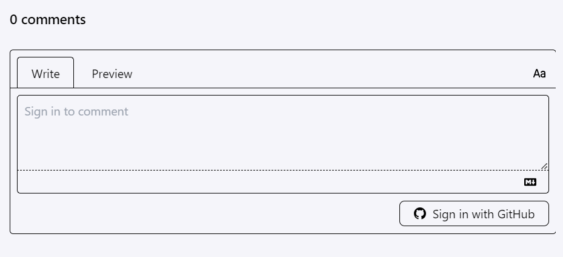
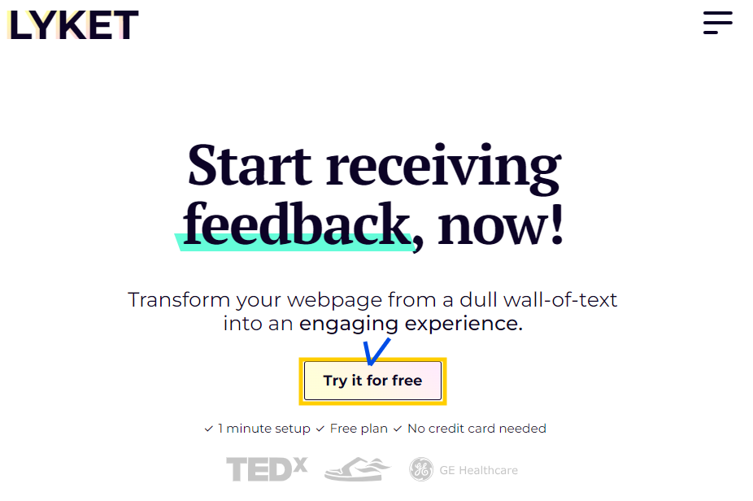
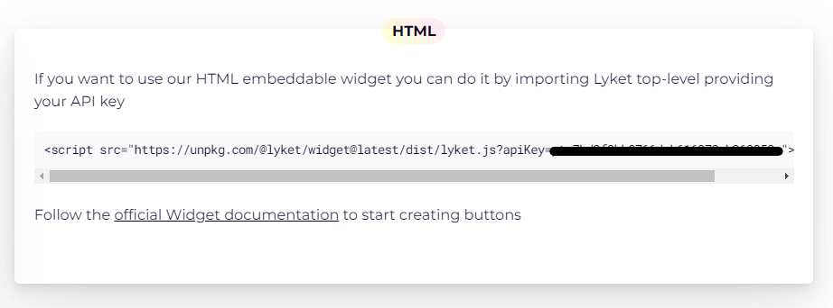
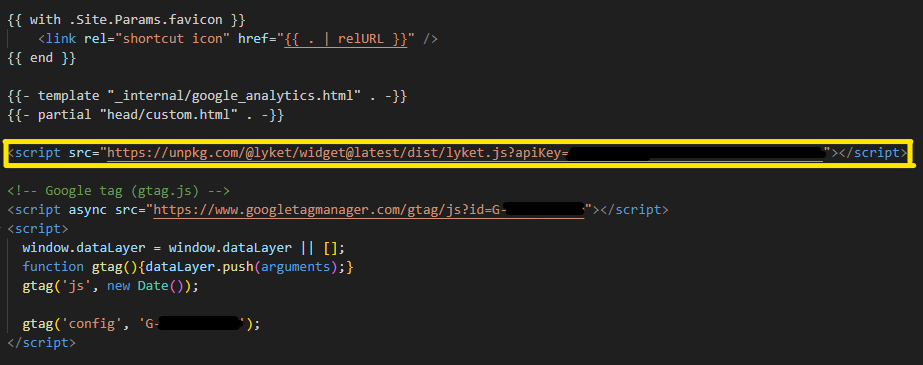

github 블로그를 개설하면서,
giscus 를 추가했습니다.
(블로그에도 소통창구가 필요하기 때문에..!)

giscus comment
하지만 다 좋아보였던 giscus에서 느낀 단점이라면..
github 계정이 있는 사람만 반응을 남길 수 있다는 것..!
주변에 github 계정을 갖고 있는 사람도 없거니와
github 계정 보유자만 반응을 남길 수 있는 것이 일종의 허들로 느껴져서,
계정이 없이도 반응을 남길 수 있는 Lyket을 사용해보게 되었습니다.
Lyket 설치 방법
Lyket 계정 생성하기

lyket page link 🔗
HTML API key 복붙하기
- 계정 생성 후 확인 가능한 페이지에서
HTML API key 를 복사한 다음,

lyket HTML
hugo-theme-stack ▷ layouts ▷ partials ▷ head ▷ head.html에 삽입을 해줍니다.
(맨 아래 참고)
1
2
3
4
5
6
7
8
9
10
11
12
13
14
15
16
|
{{- partial "head/style.html" . -}}
{{- partial "head/script.html" . -}}
{{- partial "head/opengraph/include.html" . -}}
{{- range .AlternativeOutputFormats -}}
<link rel="{{ .Rel }}" type="{{ .MediaType.Type }}" href="{{ .Permalink | safeURL }}">
{{- end -}}
{{ with .Site.Params.favicon }}
<link rel="shortcut icon" href="{{ . | relURL }}" />
{{ end }}
{{- template "_internal/google_analytics.html" . -}}
{{- partial "head/custom.html" . -}}
<script src="https://unpkg.com/@lyket/widget@latest/dist/lyket.js?apiKey=APIKEY"></script>
|
- 참고로
google tag 코드를 삽입해둔 경우, google tag 상단에 HTML을 추가해주어야 합니다.

lyket 배치 위치
Custom setting
- 그 다음, 마음에 드는 스타일로 좋아요 버튼을 만들어줍니다.
1
2
3
4
5
6
7
8
9
10
11
12
13
|
<!doctype html>
<div class="lyket-container">
<div style="font-size: 19px"
data-lyket-type="clap"
data-lyket-id="blooming-daisy"
data-lyket-namespace="blog"
data-lyket-template="heart"
data-lyket-color-icon = "#fcba03"
data-lyket-color-text= "#fcba03"
data-lyket-color-highlight = "#fcba03"
></div>
<span class="lyket-label"> 응원의 박수💕</span>
</div>
|
파라미터 정리
| 파라미터 |
설명 |
| data-lyket-type |
Lyket 버튼 유형 지정 (clap,like,star) |
| data-lyket-id |
각 Lyket 버튼의 ID를 지정, 페이지별 고유값이어야 함 |
| data-lyket-namespace |
Lyket 버튼의 스페이스 할당 |
| data-lyket-template |
Lyket 버튼의 스타일 지정 (simple,twitter,chevron..) |
| data-lyket-color-icon |
버튼 아이콘의 색상 지정 |
| data-lyket-color-text |
버튼 텍스트 색상 지정 |
| data-lyket-color-highlight |
사용자가 버튼 클릭 시 애니메이션 색상 |